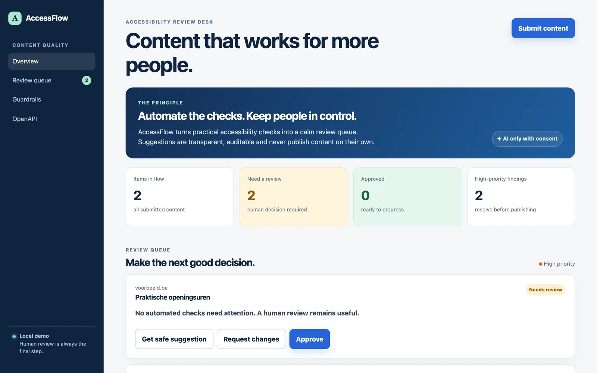
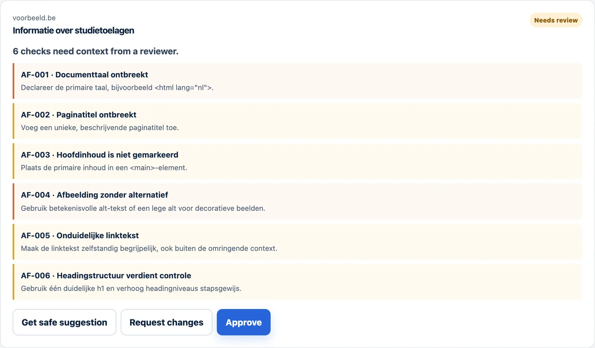
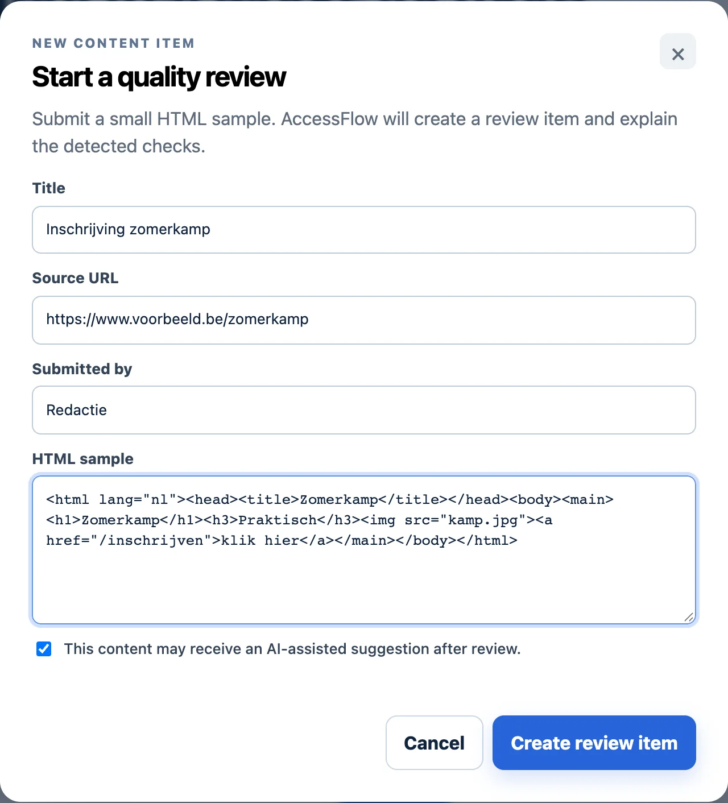
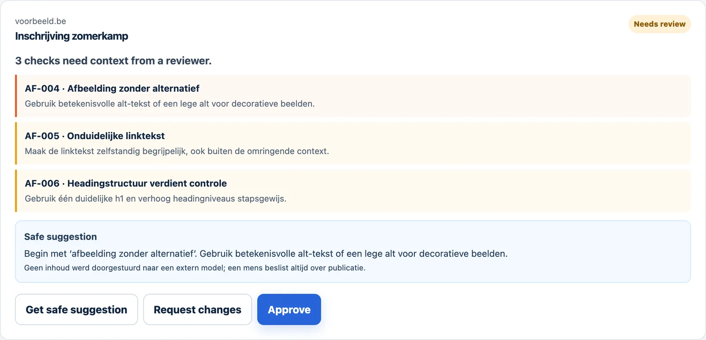
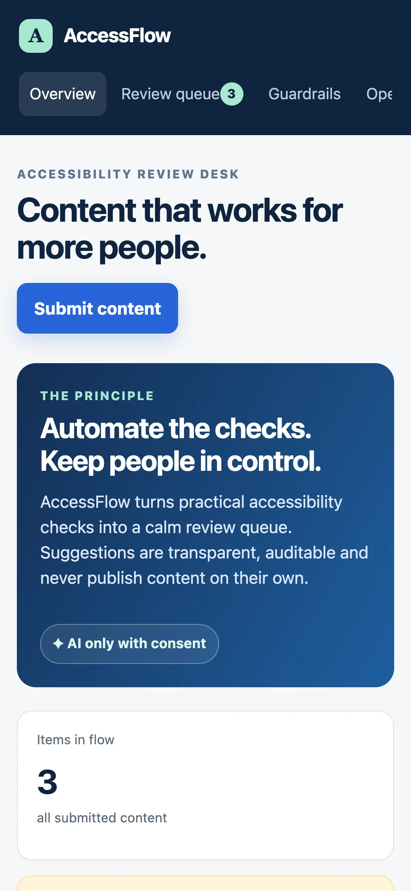

Automate the checks. Keep people in control.
AccessFlow is a review desk for teams that publish for schools, public services and social organisations. It runs transparent accessibility checks on submitted HTML, queues the result for a reviewer, and only offers an AI suggestion when the editor opted in. Nothing publishes itself.

Why it exists
An automated checker is useful. An automated publisher is a liability.
Accessibility scanners either flood editors with jargon or get treated as a conformance certificate. AI tools rewrite content without asking, and nobody can tell afterwards who approved what.
Six plain checks, each with a rule code, a severity and advice an editor understands. Every item waits for a human decision that is recorded. AI help is opt-in per item and can only suggest, never change the publication status.
Try it · runs in your browser
Paste HTML, see what a reviewer would see
These are the same six rules as the C# ContentInspectionService, ported to JavaScript. Both implementations answer a shared set of test cases in CI, so this page cannot drift from the API. Edit the HTML, toggle AI consent, then approve or request changes.
Findings are in Dutch because the app targets Flemish public-sector content; the grey line under each gives the English meaning. Each finding shows the exact markup the rule matched. The suggestion here is a canned, rule-based text: the real API keeps a provider-neutral adapter and calls no external model in the demo.
How it works
A small backend with deliberate boundaries
Deterministic checks first
Document language, page title, main landmark, heading order, image alt text and vague link labels. Regex-based, explainable and tested, see ADR 002.
Human review is the control point
Items start as Needs review. Approve or request changes is an explicit, recorded decision with reviewer, time and note (ADR 001).
AI only with consent
The suggestion endpoint refuses items without consent. Suggestions inform a reviewer and never touch publication status.
Clean separation
Domain, Application, Infrastructure and API projects. Warnings as errors, a formatting gate and CI on every push.
The flow, step by step
Screens
What it looks like
Screenshots from the actual ASP.NET Core app, captured with Playwright against a local run.




Evidence
What is real, and what is not
While building this page, the screenshots exposed two front-end bugs and the parity check exposed three rule gaps. All five are fixed and covered by tests.
REAL Built and verified
- .NET 10 API, review workflow and dependency-free UI, run locally for these screenshots
- Rule engine with unit tests; formatting and build gates in CI
- Consent check on the suggestion endpoint and recorded review decisions
- Fixed in this pass: advice text was injected as HTML, the submit form crashed after saving, and the page scrolled sideways on phones
SIMULATED Mocked or not built yet
- Storage is in memory: restarting the API resets the queue
- The AI suggestion uses a placeholder adapter, not a real model
- Six regex checks are a triage aid, not a WCAG conformance audit
- No authentication: the reviewer name is fixed in the demo
Run it yourself
Run it locally
Requires the .NET 10 SDK. No database, cloud account or model key.
git clone https://github.com/phlppgdfry/accessflow-dotnet
cd accessflow-dotnet
dotnet run --project src/AccessFlow.Api
# open the URL ASP.NET Core prints (usually http://localhost:5000)
# quality gates, as in CI
dotnet test AccessFlow.slnx
dotnet format AccessFlow.slnx --verify-no-changes
node scripts/check-browser-port.mjs # browser port = C# rules